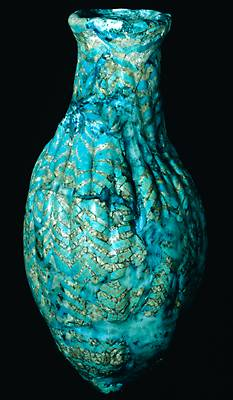

The Challenge -
Glass vase

This glass bottle was found at Ur by Leonard Woolley. It dates to around 1300 B.C., about three hundred years after glass was invented. It was made by pouring glass over a lump of shaped sand. Once the glass had solidified, the sand was scraped out and threads of blue glass were wound around the outside as decoration.
|
|